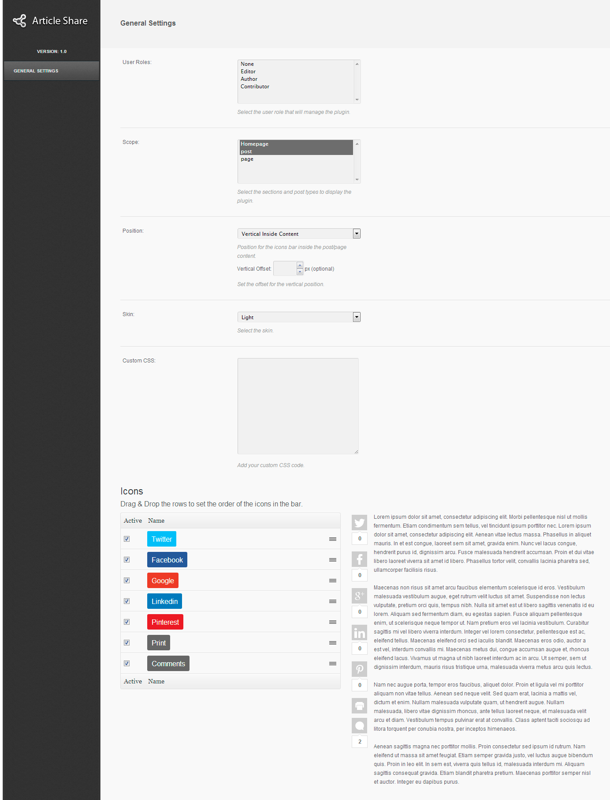
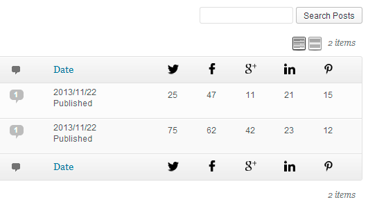

Wordpress Article Social Share
Premium Plugin
- Created: 27/11/2013
- latest Update: 27/11/2013
- By: Diego Pereyra
- Email: info@dpereyra.com
The Article Share plugin adds a sleek social bar in your articles and pages, to burst your page views.
Introduction
Thank you for purchasing my item. If you have any questions that are beyond the scope of this help file,
please feel free to email via my user page contact form here. Thanks so much!
Features
-
Elegant & Sleek CSS3 Design
-
Ultra fast share buttons loading
-
See Share counter from the posts/pages list in the wp-admin side
-
Light and Dark predefined styles
-
Posts, pages and custom
post types supported
-
Display the social share icons on index pages including the home page
-
Responsive Layout
-
Change Icons order
-
Facebook, G+, Twitter, Linkedin,
Pinterest, Print, Comments.
- Different bar positions
- Disable the social share bar in specific posts/pages
-
Cross Browser Support
Included Folders
The following files and folders are included in the package:
- Documentation Folder contains this help file.
- dpArticleShare Folder contains the Wordpress plugin.
Usage
- 1 - Copy the "dpArticleShare" folder into your wordpress "wp-content/plugins/" folder using
your favorite FTP program.
- 2 - Go to your WordPress "Manage Plugins" page, find the "DP Article Share" in your plugins list and click on activate.
That's it for the installation!
Once the plugin has been activated you will notice a new menu on the side called "Article Share" enabling you to customize it.
Settings

Here you can select the default settings of the plugin, change the icons order and see a preview in a random text
- User Roles - Select the user role that will manage the plugin.
- Scope - Select the sections and post types to display the plugin.
- Position - Position for the icons bar inside the post/page content.
- Vertical Offset - Set the offset for the vertical position.
- Skin - Select the skin (light / dark)
- Custom CSS - You can add custom CSS code
Icons
Drag & Drop the rows to set the order of the icons in the bar. Also you can activate / deactivate specific buttons.
Share counters stats

See the share stats easily from the posts / pages lists
Changelog
Version 1.2.7
- Fixed issue with LinkedIn button
Version 1.2.6
Version 1.2.5
- Fixed issue with the description in some social networks
Version 1.2.4
- Improved responsiveness for vertical layouts
- Fixed issue with Tooltips in iPhone
Version 1.2.3
- Added Fixed Left Position
- Fixed issue with Pro Event Calendar
Version 1.2.2
Version 1.2
- Added Bit.ly support.
- Added option to place counters in the right.
Version 1.1.9
Version 1.1.8
- Added bottom share bar for vertical positions in mobile
Version 1.1.7
- Added URL shortener for twitter.
- Added Form for email share
Version 1.1.6
- Improved counters save time in cache.
Version 1.1.5
- Improved Stats
- Added Tooltip for "Plus" button
- Added possibility to use negative numbers in vertical offset.
Version 1.1.4
- Improved modal responsiveness
Version 1.1.3
- Fixed issue with modal in vertical bar position
- Added translation for email body text.
Version 1.1.2
- Added Twitter handle option
- Added "color" skin
- Added Blogger Icon
- Added option to limit icons displayed in the bar
- Added option to display icons in a modal
Version 1.1.1
- Fixed issue with Pinterest and VK counters
Version 1.1
- Added feature to choose image on Pinterest icon click
Version 1.0.9
- Fixed issue displaying social texts in the RSS feed and excerpts
- Fixed issue loading the social share buttons before than the CSS styles
- Improved vertical position responsiveness
Version 1.0.8
- Added tooltips to share buttons
Version 1.0.7
- Added Buffer share button
- Added Vkontakte share button
Version 1.0.5
- Fixed issues with some themes displaying the social bar
Version 1.0.4
- Added Social Share Widget
- Added "Top and Bottom horizontal" position
- Fixed issues with Disqus comments counter
Version 1.0.3
- Fixed issues displaying the social bar in home page
- Added option to enable/disable the counters
- Added Tumblr
- Added Digg
- Added Reddit
Version 1.0.2
- Added support for Disqus in comments counter
- Added Stumbleupon
- Added Delicious
Version 1.0.1
- Fixed issue removing icons from the plugin panel
Version 1.0